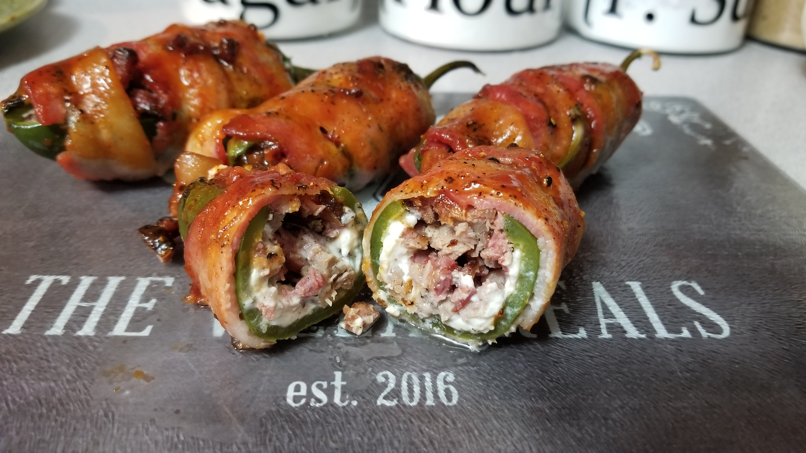

Texas Twinkies

Description
Brisket and cream cheese stuffed bacon wrapped jalapenos with a BBQ glaze. This recipe requires pre-cooked brisket. It is a great recipe to use up any leftover brisket.
Ingredients
- 12 medium jalapeno peppers
- 12 tablespoons cream cheese, softened
- 1 ½ pounds Beef, brisket, flat half, separable lean only, trimmed to 0" fat, all grades, cooked, braised
- 12 slices thick-cut bacon
- 1 teaspoon kosher salt, or as needed
- 1 teaspoon coarse ground black pepper
- ½ (12 ounce) bottle BBQ sauce
Steps
- Preheat the oven to 300 degrees F (150 degrees C).
- Slice the jalapenos in the shape of a "T": cut a straight vertical line from top to bottom with a cross-cut directly under the stem, making sure to cut only halfway through the jalapenos. Use a spoon to remove and discard all seeds and membranes. Place jalapenos on a baking sheet.
- Bake in the preheated oven for 10 minutes.
- Remove from the oven and place jalapenos in a bowl of ice water to extract the rest of the seeds' oil. If you do not do this step, they will be extremely spicy. Raise the oven temperature to 350 degrees F (175 degrees C).
- Remove jalapenos from the water and blot dry with a paper towel. Spread 1 tablespoon of cream cheese inside of each jalapeno. Place approximately 2 ounces of brisket inside each, then wrap with a slice of bacon. Sprinkle a pinch of kosher salt and a pinch of ground pepper over the top of each bacon-wrapped jalapeno, then transfer to the baking sheet.
- Bake in the preheated oven for 30 minutes. Remove from the oven and brush tops with BBQ sauce. Continue to bake for 5 minutes more.